# sensors and sensing ## **Design of Autonomous Systems** ### csci 6907/4907-Section 86 ### Prof. **Sibin Mohan** --- embedded/autonomous system --- embedded/autonomous system <br> ### **perceives** the physical world via sensors --- ### **perceives** the physical world via sensors gather information about: - environment - its _own_ state --- ## sensors --- ## sensors critical component in... <img src="img/sense_planning_actuation.png" width="700"> --- ## sensors today, we discuss... ||| |------|-------| |<img src="img/sense_planning_actuation.png" width="600">|<img src="img/stack_architecture/stack_overview.2.png" width="500">| || --- ## sensors modern autonomous systems → _wide array_ of sensors --- ## sensors modern autonomous systems → _wide array_ of sensors - measure **different** quantities, _e.g.,_ GPS, velocity, objects, _etc._ --- ## sensors modern autonomous systems → _wide array_ of sensors - measure **different** quantities, _e.g.,_ GPS, velocity, objects, _etc._ - sensor measurements often have **errors** --- ## core idea of sensor capture physical/chemical/environmental quantity... --- ## core idea of sensor capture physical/chemical/environmental quantity... ...**convert it to a digital quantity**! --- ## signals - by definition, sensors generate **signals** --- ## signals - by definition, sensors generate **signals** - mapping from the _time_ domain to a _value_ domain --- ## signals - mapping from the _time_ domain to a _value_ domain $$ s: D_t \mapsto D_v $$ --- ## signals - mapping from the _time_ domain to a _value_ domain $$ s: D_t \mapsto D_v $$ | symbol | description | |--------|------------------------------------------| | $D_t$ | continuous or discrete **time** domain | | $D_v$ | continuous or discrete **value** domain | || --- ## discrete 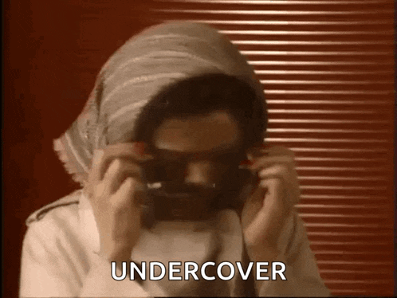 --- ## discrete **not** continuous → **sampling** --- ## discrete **not** continuous → **sampling** <img src="img/sensors/discretization_sampled.signal.svg" title="Sampling image from Wikipedia"> <font color="red"><b>red</b></font> arrows → instances of sampling --- <img src="img/sensors/discretization_sampled.signal.svg" title="Sampling image from Wikipedia"> <font color="red"><b>red</b></font> arrows → instances of sampling [we will come back to sampling later] --- ## **Types** of Sensors --- ## **Types** of Sensors - sensors come in various shapes and sizes --- ## **Types** of Sensors - sensors come in various shapes and sizes - designers → develop a **sensor plan** --- ## sensor plan considers - required functionality - sensor range(s) - cost --- ## sensor plan considers - required functionality - sensor range(s) - cost each autonomous system → its **own set of sensors** --- ## classification of sensors --- ## classification of sensors on _typical_ autonomous systems... --- ## classification of sensors ...based on physics used --- ## classification of sensors |physical property|sensor| |-----------------|-------| --- ## classification of sensors |physical property|sensor| |-----------------|-------| |[_internal_ measurements](#inertial-measurement-units-imu)| IMU | --- ## classification of sensors |physical property|sensor| |-----------------|-------| |[_internal_ measurements](#inertial-measurement-units-imu)| IMU | |_external_ measurements| GPS | --- ## classification of sensors |physical property|sensor| |-----------------|-------| |[_internal_ measurements](#inertial-measurement-units-imu)| IMU | |_external_ measurements| GPS | |["bouncing" <br> electromagnetic waves](#bouncing-of-electromagnetic-waves--lidar-and-mmwave)| LiDAR, RADAR, <br> mmWave Radar| --- ## classification of sensors |physical property|sensor| |-----------------|-------| |[_internal_ measurements](#inertial-measurement-units-imu)| IMU | |_external_ measurements| GPS | |["bouncing" <br> electromagnetic waves](#bouncing-of-electromagnetic-waves--lidar-and-mmwave)| LiDAR, RADAR, <br> mmWave Radar| |optical| cameras, infrared sensors| --- ## classification of sensors |physical property|sensor| |-----------------|-------| |[_internal_ measurements](#inertial-measurement-units-imu)| IMU | |_external_ measurements| GPS | |["bouncing" <br> electromagnetic waves](#bouncing-of-electromagnetic-waves--lidar-and-mmwave)| LiDAR, RADAR, <br> mmWave Radar| |optical| cameras, infrared sensors| |[accoustic](#ultrasonic)| ultrasonic sensors| || --- ## classification of sensors |physical property|sensor| |-----------------|-------| |[_internal_ measurements](#inertial-measurement-units-imu)| IMU | |_external_ measurements| GPS | |["bouncing" <br> electromagnetic waves](#bouncing-of-electromagnetic-waves--lidar-and-mmwave)| LiDAR, RADAR, <br> mmWave Radar| |optical| cameras, infrared sensors| |[accoustic](#ultrasonic)| ultrasonic sensors| || will focus on **some** of these --- some of them can be **combined** --- some of them can be **combined** to generate other sensing patterns --- some of them can be **combined** to generate other sensing patterns ### _e.g.,_ **stereo vision** using multiple cameras --- ### Inertial Measurement Units (**IMU**) --- ### Inertial Measurement Units (**IMU**) define movement of vehicles --- ### Inertial Measurement Units (**IMU**) define movement of vehicles - along **three** axes - **acceleration** - **directionality** --- ## IMU sensors --- ## IMU sensors 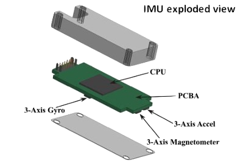 --- ## IMU sensors includes a processor/microcontroller --- ## IMU sensors constituent parts of IMU ||||| |---------|--------|---------|-----------| ||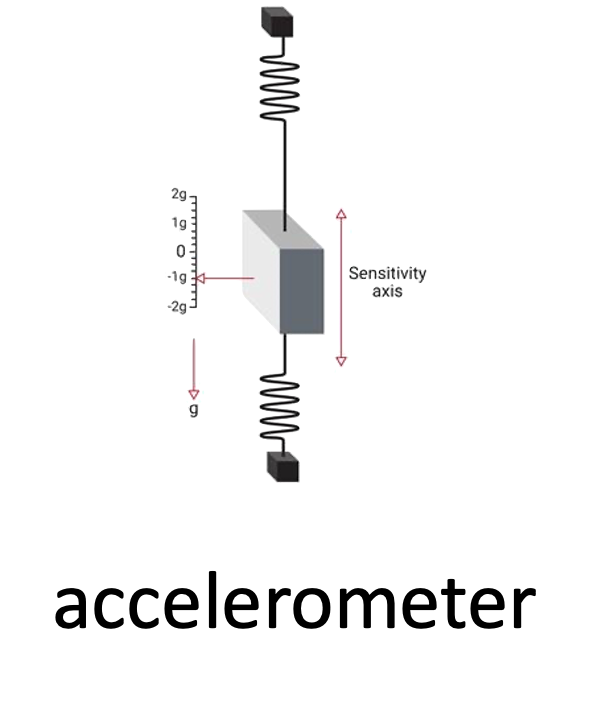|| || --- ## IMU sensors constituent parts of IMU ||||| |---------|--------|---------|-----------| |||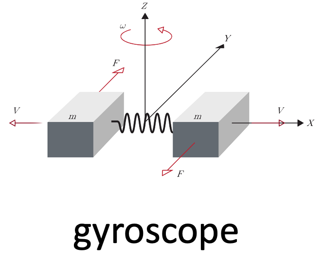|| || --- ## IMU sensors constituent parts of IMU ||||| |---------|--------|---------|-----------| ||||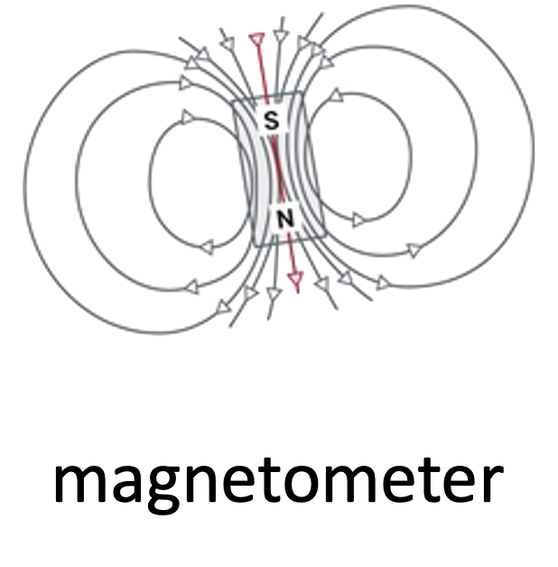| || --- ## IMU sensors constituent parts of IMU ||||| |---------|--------|---------|-----------| ||||| || --- ## IMU sensors constituent parts of IMU ||||| |---------|--------|---------|-----------| ||||| || let's look at the functionality of each one... -v- ## gyroscope -v- ## gyroscope **inertial** sensor -v- ## gyroscope **inertial** sensor → measures **angular rate** -v- <!-- .slide: data-background="white" --> ## gyroscope **inertial** sensor → measures **angular rate** |||| |--------|----------|---------| |<img src="img/sensors/imu_yaw.gif">|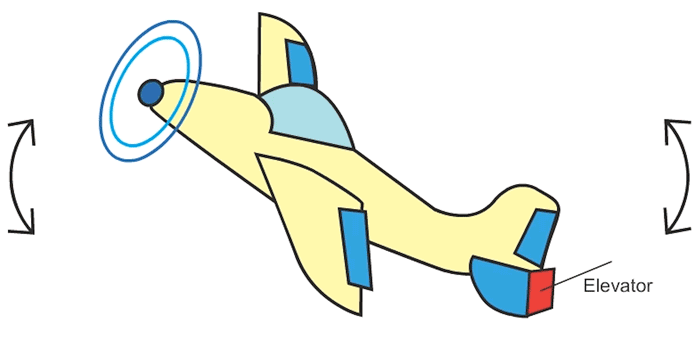|<img src="img/sensors/imu_roll.gif">| | "yaw" | "pitch" | "roll" | || Note: MUs come in all shapes and sizes. These days they're very small but the original IMU's ver really large, as evidenced by the one used in the [Apollo space missions] -v- |accelerometer|magnetometer| |-------------|------------| |inertial acceleration|strength/direction of magnetic field| --- ## LiDAR --- ## LiDAR light detection and ranging --- ## LiDAR light detection and ranging - uses eye safe **lasers beams** - mapping surroundings - create **3D representation** --- ## LiDAR light detection and ranging - uses eye safe **lasers beams** - mapping surroundings - create **3D representation** Note: lasers are used for... - imaging - detection - ranging --- <!-- .slide: data-background="white" --> ### typical operation 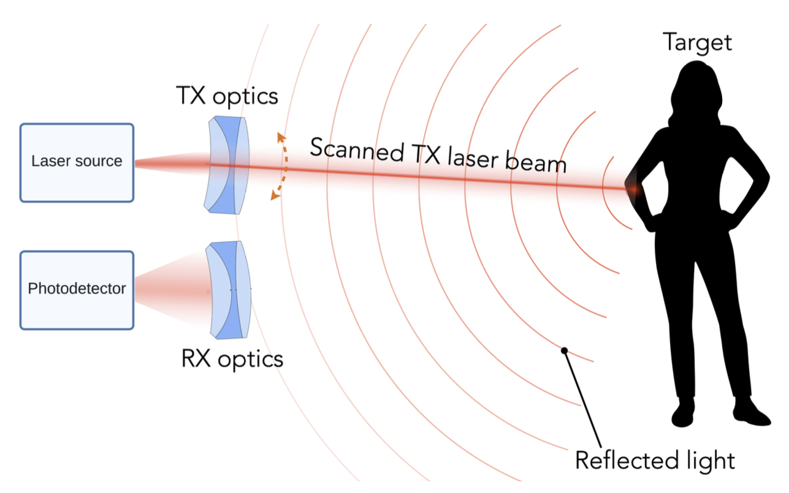 --- <!-- .slide: data-background="white" --> ### typical operation **round trip time**: $$ R = \frac{c\tau}{2} $$ where, `c` is the speed of light. --- <!-- .slide: data-background="white" --> 3D representation → **point cloud** 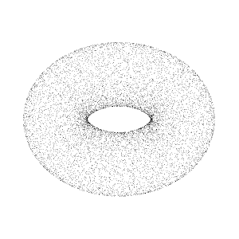 --- ### points clouds around autonomous vehicles <video controls width="900"> <source src="https://sibin.github.io/teaching/csci6907_88-gwu-secure_autonomous/fall_2022/other_docs/What-is-Lidar-video.mp4"></video> --- ## point clouds - **3D coordinates**, $(x, y, z)$ --- ## point clouds - **3D coordinates**, $(x, y, z)$ - **strength** of returned signal - **density**/material composition of objects! --- ## point clouds - **3D coordinates**, $(x, y, z)$ - **strength** of returned signal - **density**/material composition of objects! - additional **attributes**: - return number, scan angle, scan direction, - point density, RGB color values, time stamps - each can be used for refining the scan. --- ## scene illumination --- <!-- .slide: data-background="white" --> ## scene illumination | **flash** lidar 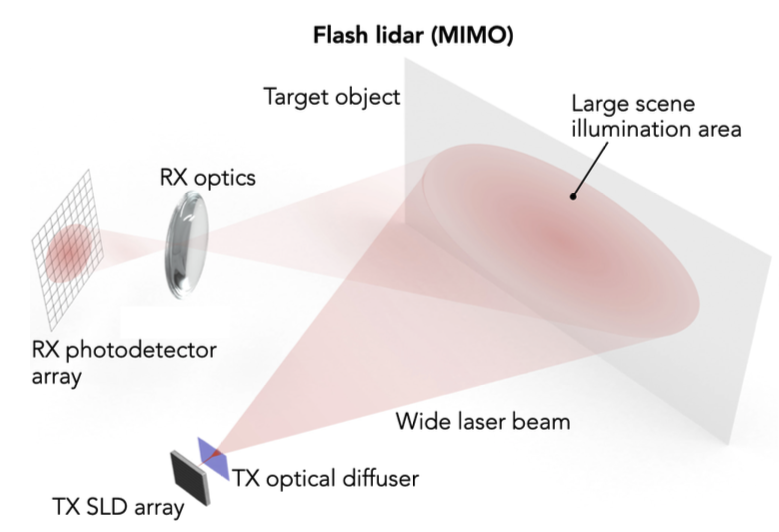 Note: - _entire_ scene using wide laser - receives all echoes on a photodetector array | --- <!-- .slide: data-background="white" --> ## scene illumination | **scan** lidar 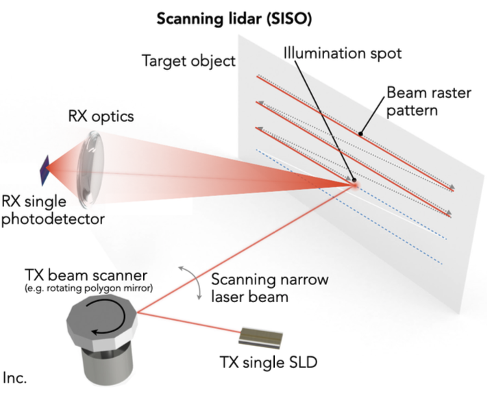 Note: - very narrow laser beams, scan illumination spot with laser beam scanner - single photodetector to sequentially estimate $\tau$ for each spot --- <!-- .slide: data-background="white" --> ## scene illumination | comparison | | flash lidar | scan lidar | |----|----|------| | **architecture** | | | | **resolution** determined by | photodetector array pizel size (like camera) | laser beam size and spot fixing | | **frame rates** | higher (up to `100 fps`) | lower (< `30 fps`) | | **range** | shorter (quick beam divergence, like photography) | longer (`100m+`) | | **use** | less common | **most common** | || --- ## scene illumination | _image_ comparison consider the following "scene" (taken using camera) 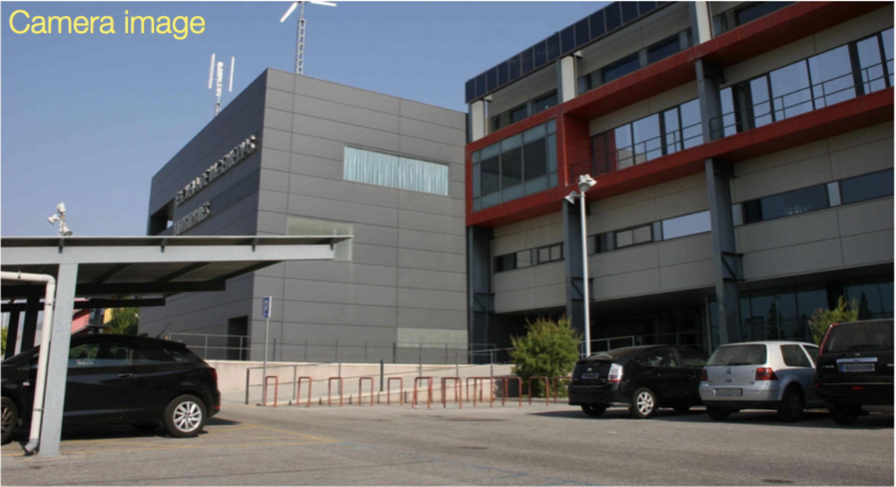 --- ## scene illumination | **flash** image 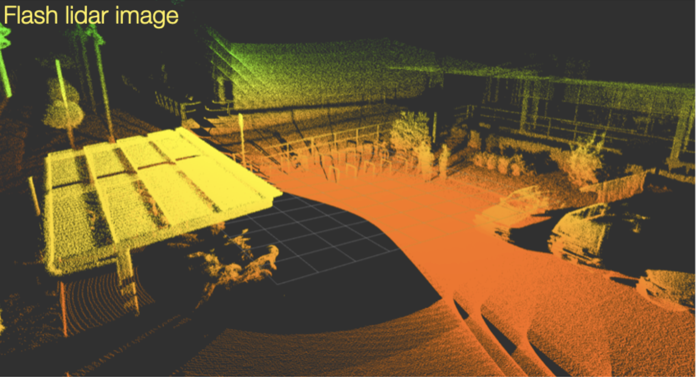 --- ## scene illumination | **scan** image [16 lines] 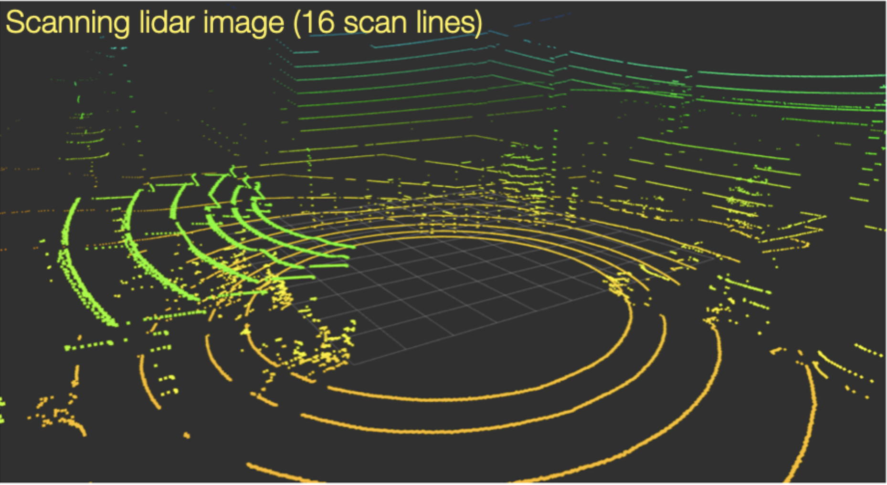 --- ## scene illumination | **scan** image [32 lines] 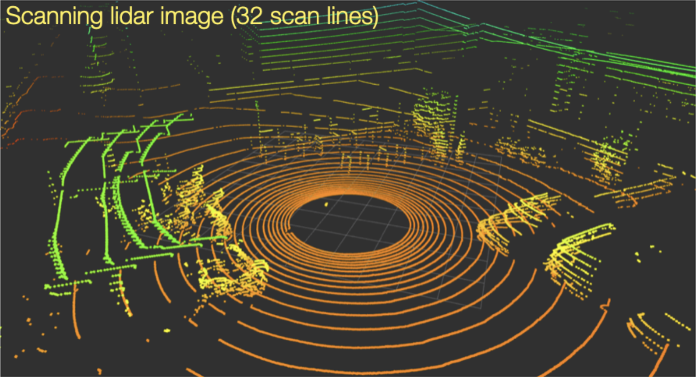 --- ## scene illumination | image comparisons |flash lidar | scan lidar [16] | scan lidar [32] | |----|----|-----| | | | | || --- ## potential problems atmospheric/environmental conditions → **false positives** 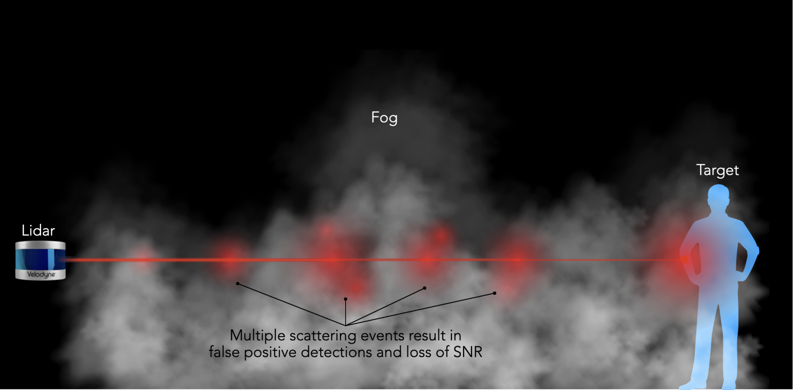